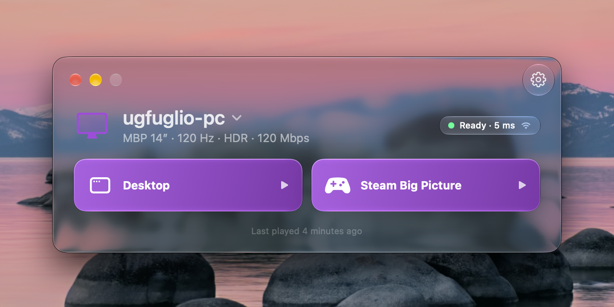

Your gaming PC,
on your Mac.
The games you love. The Mac you love.
Glimmer brings them together.

A little closer
to your PC.
Your gaming PC can stay at the desk.
You don't have to.
Glimmer streams games from a PC running Sunshine to your Mac. Settle in with your MacBook, pick up a controller, and open a game. From the launcher to the last frame, it's built to feel at home on macOS.
Free, now and always. No account. No analytics.
PC games.
Mac instincts.
Written in Swift. Built around Apple's video, audio and input frameworks. The details feel familiar because they are.
Take the whole screen.
Or just a corner.
Go full screen in a native macOS Space, with the picture below the camera on a notched display. Game Mode stays where it belongs: in macOS.
Keep a game close in Mini Player while you use another app. Your controller can keep playing in the background.
Sound that follows
your Mac.
AirPods, USB speakers, or your Mac's own speakers. Glimmer follows your selected output and recovers when you switch devices.
Compatible AirPods get spatial playback and head tracking automatically. Stereo, 5.1 and 7.1 are supported, with no separate spatial-audio switch to manage.
About audio on macOSEvery frame.
Every little detail.
Hardware-decoded H.264 and HEVC, with AV1 on supported Macs. A real HDR10 pipeline. Quality presets matched to your display, with pacing that adapts to the connection.
Play with a controller or mouse and keyboard. Rumble, gyro and touchpad support follow what your controller can do.
Right where
you'd reach for it.
Launch from the menu bar, Shortcuts, Siri or Spotlight. Wake a sleeping PC with Wake on LAN. Use the included glimmer command when a terminal is your shortcut.
Signed, notarized, and self-updating. The optional Wi-Fi helper can reduce interruptions from AirDrop's radio sharing.
Find your shortcutsTwo computers.
One place to play.
Bring an Apple Silicon Mac running macOS 26 or later and a PC running Sunshine. Glimmer handles the Mac side.
-
Prepare your PC
Install Sunshine and set up the display mode you want to stream.
PC setup guide -
Pair your Mac
Open Glimmer, choose your PC, and enter the pairing PIN in Sunshine.
-
Make yourself comfortable
Choose an app from the launcher. Pick up your controller. You're ready to play.
Your next game.
On your Mac.
Free and open source. Every feature, for everyone.
Download for MacmacOS 26 or later · Apple Silicon
Prefer Homebrew?
In Terminal, add and trust the tap first:
brew tap se7enbrc/glimmer
brew trust --tap se7enbrc/glimmerThen install Glimmer:
brew install --cask se7enbrc/glimmer/glimmer